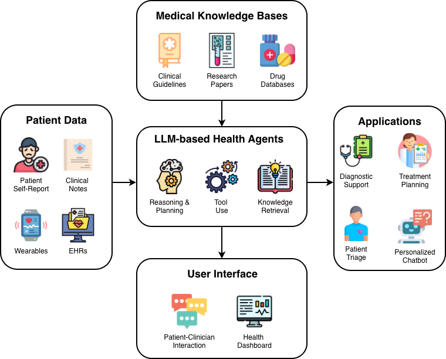

AI for Health pushes the boundaries of medical AI by moving beyond simple classification toward comprehensive clinical reasoning and multimodal understanding.
We leverage massive-scale foundation models and reinforcement learning to assist clinicians in complex diagnostic and therapeutic tasks. By integrating diverse data modalities, we aim to build systems that are not only accurate but also robust and clinically insightful in real-world clinical environments.

Key Research Areas
Multimodal Pathology
Building foundation models that can interpret complex histopathology images alongside genomic and clinical data for more precise diagnosis and prognosis.
RL for Treatment Optimization
Applying Reinforcement Learning (RL) to discover optimal, personalized treatment strategies for chronic diseases and critical care scenarios.
Clinical Decision Support
Developing robust AI systems that provide real-time, evidence-based recommendations to clinicians, reducing cognitive load and improving patient safety.
Mental Health Monitoring
Developing psychologically-grounded models for early detection and interpretable analysis of mental disorders. See dedicated project.
Bridging the Gap Between Data and Care
Modern healthcare generates vast amounts of data, yet much of it remains siloed or underutilized. Our research focuses on three critical pillars:
1. Multimodal Foundation Models: We believe the future of medical AI lies in models that "see" and "read" simultaneously. By pre-training on millions of paired images and reports, our models learn the intricate relationships between visual evidence in pathology and textual descriptions in clinical notes.
2. Reinforcement Learning in the Clinic: Unlike supervised learning, RL allows us to model healthcare as a dynamic process. We develop offline RL algorithms that can learn from historical patient trajectories to suggest interventions that maximize long-term health outcomes while strictly adhering to safety constraints.
3. Trustworthy Decision-Making: Accuracy is not enough. We prioritize model interpretability and uncertainty estimation, ensuring that AI-driven insights can be audited and trusted by medical professionals before they reach the bedside.
LLM-based Health Agents
Our project aims to build a unified framework for LLM-based Health Agents, designed to bridge the gap between static medical knowledge and dynamic patient care.
- Knowledge & Data Integration: The system ingests multi-modal Patient Data (including EHRs, clinical notes, and real-time wearables) and cross-references it with extensive Medical Knowledge Bases such as clinical guidelines, latest research papers, and drug databases.
- Core Intelligence: At the heart of the architecture, the LLM-based Health Agent performs complex reasoning and planning. It utilizes a dedicated knowledge retrieval mechanism and external tools to process information beyond its internal parameters.
- Clinical Applications: The agent translates synthesized insights into actionable Applications, including diagnostic support, treatment planning, and patient triage, delivered through intuitive User Interfaces such as clinical health dashboards.